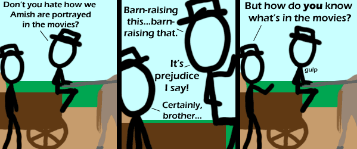

Comic JK 398
When I Feel Like It
⇤
<
?
>
⇥

⇤
<
?
>
⇥
Forum
.
RSS
.
Digg
.
Facebook
.
Reddit
.
Twitter
.
Stumbleupon
Don't you hate how your mother is portrayed in the movies? oops, not sorry... >Not sorry?!? *Restored from save :P * Enter your thoughts on number 398 here. Please, no spamming, trolling, or phreaking. This can be applied to people who ignore the reality of the world in favor of religion everywhere. >Including that 'Evolution' religion.The day I see new information coming into existence without any intelligent input is the day my programs manage to write themselves with no bugs and absolutely no input from any intelligence. This would of course mean that a computer would have to spawn itself from nothing as well... >>you misspelled intelligence. fail >>>You didn't capitalise the "f" in "Fail" after the full stop. Epic fail. >>Even programs you consciously write don't get intelligent input in their design. >>>Yet they have intelligent input regardless. Although yes, I am a little ashamed of the bugs I left in gmail... >>>>and again. >>>>>There is already software that creates software. Probably not bug-free - but no the other hand, practically no software is... >>>>>>But who writes THAT software? >>>>>>Just me or is anybody else chuckling that a comic about the Amish has spawned a discussion about technology? >>>>>>> Note the website you're posting this on. >>>>>>>> Note what you're posting it with. Oh, PS: information theory fail. >>>>>>>>> lol@ no bugs. the human body is full of them from the spine being shaped for four legged walking to the appendix, how can you say there are no bugs >>>>>>>>>>The spine is shaped for 2 legged walking - that's why sitting and crawling for long periods gives you backache. >>>>>>>>>>Information does seem to come from non-information. Even creationists admit to some kind of micro-evolution. Some creationists believe that new adaptations can only be degraded forms of old information. The more interesting question is whether or not the information we see is improbable or not. There's good evidence that random variation, even with natural selection, is probably not enough to jump several crucial barriers in the formation of life. The physical constants needed to produce carbon in stars as described by Hoyle, the chiral nature of the first RNA strings, The jump from self-replicating rna to a metabolic structure, etc. It may be phsyically possible to win the lottery twice in a row, but such an event strongly suggests a rigged game. > Or ~5 billion years. >>Or the strong anthropic principle (I think it's the strong one anyway) >>>>>>>>>>>At the authors of: ">>" and ">>>," you both have used fragments ("fail" and "Epic fail."). Actually, young Amish are allowed out into the world for a time, so they likely WOULD know what's in the movies. >Hah..I read that as "let out into". I had to double check, because I knew it couldn't be right. this reminds me of the movie "Sex Drive" this is funny dude